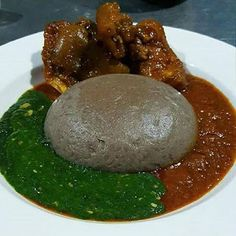

Amala

Description
Amala is made from yam flour (Elubo) and is a Nigerian cuisine mostly eaten by the Yorubas especially
the people of Oyo State.
Ingredients
- 4 cups (1000ml) water
- 2 cups yam flour - sifted
- 1 cuo (250ml) hot water reserved
Steps
- To skin the beans, soak the beans in water for 3 minutes, after about 3 minutes,
the skin of the beans should start wrinkling a little bit.
- Place the beans in a food processor, with water, just enough to cover it,
then pulse the food processor about 5- 6 times to agitate the beans.
This process breaks the beans up and separates the skins from the beans.
Watchout for splashing water!
- Pour the skinned beans in a bowl. Rinse several times to wash off any loose skin,
draining the skins with the water with each rinse.
The skins should come off easily because the skins are lighter and should float easily to the top.
- Once the beans are clean, soak them in water for at least 4 hours or over night.
- After the beans have soaked, drain the water that they have been soaking in, and rinse the beans one more time.
- Blend the beans with 1 cup of water, the bell pepper, scotch bonnet peppers, onions and bouillon.
- Place the blended beans in a bowl, mix in the oil and salt thoroughly then thin out the mixture with
the hot water until it resembles the texture of a light cake
batter (you may need less than 1/2 a cup of hot water, just make sure the texture is like a light cake batter).
- You can taste the mixture to adjust for salt (it is will not taste good at this point since the beans
are raw but at this point you are just tasting for seasoning).
- Prep the ramekins by brushing each one with oil on the inside like you would a cake pan.
Fill each ramekin with the mixture till it is about 3/4 full, and then top it with a piece of fish.
- In a deep pot with a properly fitted pot cover, place a sheet of banana leaf, and pour boiling water
into the pot till it is about 1 inch deep. Place the ramekins into the pot, on top of the banana leaves.
The hot water should not be more than half way up the ramekin. Cover the ramekins with a sheet of banana leaf
- Depending on how wide your pot is, you may need to layer the ramekins in the pot. To do that,
simply place the additional ramekins over the second sheet of banana leaf that
covered the first layer of ramekins, then cover that layer with another sheet of banana leaf.
- Cover the pot, and allow it to steam on low heat for 50 minutes. After 50 minutes,
check the the Moi moi. Just like a cake, a skewer inserted into the middle of it should come out clean.
If it doesn't, allow it to continue steaming for another 10 minutes.
- Allow the Moi moi to sit for 5 minutes then serve warm in the ramekin or unmolded.
Go to homepage